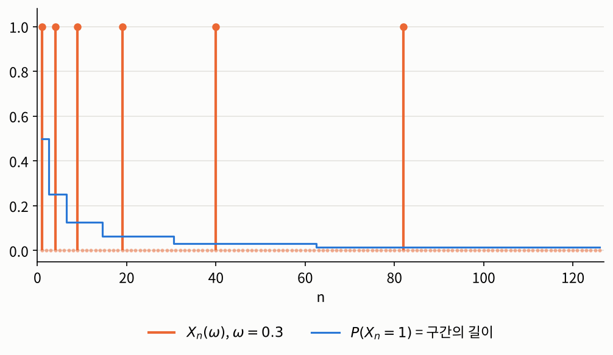

1.2 확률수렴
1장 확률변수가 가까워진다는 것 · 지금 이 순간, 크게 틀린 사람은 얼마나 되는가
들어가며
1.1에서는 한 사람이 동전을 끝없이 던지는 기록을 따라가며 거의 확실한 수렴을 정의했습니다. 하지만 실제로 데이터를 다룰 때 우리가 보는 것은 대개 끝없는 기록이 아니라, 정해진 \(n\)에서 한 번 얻은 결과입니다. 여론조사는 1000명에게 묻고 끝나고, 실험은 정해진 횟수만큼 반복하고 끝납니다.
그럴 때 궁금한 것은 “이 사람의 기록이 언젠가 \(1/2\)에 닿는가”가 아니라 “지금 이 \(n\)에서 크게 틀렸을 확률이 얼마나 되는가”입니다. 이번 글에서는 이 질문에서 출발하는 확률수렴(convergence in probability)을 정의하고, 거의 확실한 수렴과 무엇이 같고 무엇이 다른지 살펴보겠습니다.
만 명이 동시에 던진다면
이번에는 한 사람을 오래 따라가는 대신, 시점 \(n\)을 하나 정해 두고 만 명이 각자 동전을 \(n\)번씩 던지게 해 보겠습니다. 그리고 앞면 비율이 띠 \([0.45, 0.55]\) 밖에 있는 사람의 비율을 셉니다. 이 비율은 확률 \(P(|\bar{X}_n - \tfrac12| > 0.05)\)의 추정값이므로, 이항분포로 계산한 정확한 값과 나란히 놓아 보겠습니다. 마지막 열은 체비셰프 부등식이 주는 상한 \(V(\bar{X}_n)/\varepsilon^2 = 1/(4n\varepsilon^2)\)입니다.
import numpy as np
from scipy.stats import binom
rng = np.random.default_rng(1557)
people, eps = 10_000, 0.05
def far(S, n):
# |S/n - 1/2| > 0.05 를 정수 연산으로: |2S - n| * 10 > n (반올림 오차를 피하기 위해)
return np.abs(2 * S - n) * 10 > n
print(" n | 띠 밖에 있는 사람의 비율 | 정확한 확률 | 체비셰프 상한")
for n in [10, 100, 1000, 10_000]:
S = rng.binomial(n, 0.5, size=people) # 각 사람이 n번 던져 얻은 앞면 수
frac = np.mean(far(S, n))
k = np.arange(n + 1)
exact = binom.pmf(k, n, 0.5)[far(k, n)].sum()
cheb = 0.25 / (n * eps**2)
print(f"{n:>6} | {frac:>22.4f} | {exact:>11.4g} | {cheb:>12.4f}") n | 띠 밖에 있는 사람의 비율 | 정확한 확률 | 체비셰프 상한
10 | 0.7553 | 0.7539 | 10.0000
100 | 0.2704 | 0.2713 | 1.0000
1000 | 0.0008 | 0.001392 | 0.1000
10000 | 0.0000 | 1.267e-23 | 0.010010번씩 던진 시점에서는 열 명 중 일곱 명 넘게 띠 밖에 있지만, 1000번씩 던진 시점에서는 만 명 중 여덟 명뿐이고, 1만 번씩 던진 시점에서는 아무도 없습니다. 정확한 확률은 \(n = 10000\)에서 \(10^{-23}\) 정도까지 떨어집니다.
체비셰프 상한은 \(n = 10\)과 \(n = 100\)에서 \(1\) 이상이어서 아무 정보도 주지 않고, 그 뒤로도 정확한 값보다 훨씬 큽니다. 그래도 \(n \to \infty\)일 때 \(0\)으로 간다는 것만큼은 보장합니다. 이 상한이 얼마나 느슨한지, 그리고 더 좋은 상한은 없는지는 2장에서 다시 다룹니다.
이 실험에서 주목할 점은, 시점마다 새로운 만 명을 뽑았다는 것입니다. 각 줄은 서로 다른 시점의 단면일 뿐, 같은 사람을 따라간 것이 아닙니다. 그래서 이 표는 “각 시점에서 크게 틀릴 확률이 작아지는가”에는 답하지만, “한 사람이 언젠가부터 계속 띠 안에 머무는가”에는 아무 말도 하지 않습니다.
확률수렴
정의에 들어 있는 사건 \(\{|X_n - X| > \varepsilon\}\)은 시점 \(n\) 하나에서 띠 밖에 있는 사건입니다. 1.1의 정리 1.1.2에서 거의 확실한 수렴은 시점 \(n\) 이후의 미래 전체에 대한 사건 \(\bigcup_{m \ge n} \{|X_m - X| > \varepsilon\}\)으로 표현되었던 것과 비교해 보시기 바랍니다. 확률수렴은 매 시점의 단면만 봅니다.
통계학에서 추정량 \(T_n\)이 참값 \(\theta\)로 확률수렴할 때, \(T_n\)을 \(\theta\)의 일치추정량(consistent estimator)이라고 합니다. 즉 일치성이라는 말은 “표본이 충분히 크면 크게 틀릴 확률이 작다”는 뜻이고, 그 이상도 이하도 아닙니다.
두 수렴 사이의 첫 번째 관계는 정의를 나란히 놓으면 바로 보입니다.
동전의 경우는 명제 1.1.6과 정리 1.2.2로 \(\bar{X}_n \xrightarrow{P} \tfrac12\)가 이미 나옵니다. 하지만 확률수렴만 원한다면 4차 적률까지 갈 필요 없이, 위 표의 마지막 열이 그대로 증명이 됩니다.
거꾸로는 성립하지 않습니다
그렇다면 확률수렴하면 거의 확실하게도 수렴할까요? 각 시점에서 크게 틀릴 확률이 \(0\)으로 가는데도, 한 사람 한 사람은 끝없이 다시 크게 틀리는 일이 가능할까요? 가능합니다. 두 가지 예를 보겠습니다.
훑고 지나가는 빛
어두운 무대 위를 좁은 조명이 왼쪽 끝에서 오른쪽 끝까지 훑고 지나간다고 해 봅시다. 한 번 다 훑고 나면 조명의 폭을 절반으로 줄여서 다시 왼쪽 끝부터 훑습니다. 그다음에는 또 절반으로 줄여서 훑습니다. 어느 순간에도 조명을 받는 부분은 아주 좁지만, 무대 위의 모든 지점은 조명이 한 바퀴 돌 때마다 한 번씩, 영원히 다시 조명을 받습니다.
\(X_n\)이 \(1\)이 되는 구간의 길이는 \(\tfrac12, \tfrac12, \tfrac14, \tfrac14, \tfrac14, \tfrac14, \tfrac18, \ldots\)로 \(0\)으로 갑니다. 따라서 \(0 < \varepsilon < 1\)에 대해 \(P(|X_n - 0| > \varepsilon) = P(X_n = 1) \to 0\)이고, \(X_n \xrightarrow{P} 0\)입니다. 한편 \(\omega\)를 하나 고정하면, \(\omega\)는 매 묶음마다 정확히 한 구간에 속하므로 \(X_n(\omega) = 1\)이 무한히 자주 일어나고, 나머지 \(n\)에서는 \(X_n(\omega) = 0\)입니다. \(0\)과 \(1\)을 끝없이 오가니 수렴하지 않습니다.

그림의 주황색 막대는 \(\omega = 0.3\)에서 \(X_n(\omega) = 1\)이 되는 시점입니다. 막대 사이의 간격은 점점 벌어지지만, 막대는 결코 끝나지 않습니다.
점점 드물어지는 사건
타자기 수열은 인위적으로 보일 수 있습니다. 좀 더 자연스러운 예를 보겠습니다. 매일 한 번씩 사고가 날 수 있는데, \(n\)번째 날에 사고가 날 확률은 \(1/n\)이고 날마다 독립이라고 해 봅시다. 사고가 날 확률은 날이 갈수록 줄어드니, 언젠가부터는 사고가 멈출 것 같습니다. 정말 그럴까요?
이 질문에 답하려면 보렐-칸텔리 보조정리의 나머지 절반이 필요합니다. 1.1의 첫째 부분은 확률의 합이 유한하면 무한히 자주 일어나지 않는다고 했습니다. 둘째 부분은, 사건들이 독립이라면 그 반대도 성립한다고 말합니다.
\(0 < \varepsilon < 1\)에 대해 \(P(|X_n| > \varepsilon) = P(X_n = 1) = \tfrac1n \to 0\)이므로 \(X_n \xrightarrow{P} 0\)입니다. 한편 \(\sum_n P(X_n = 1) = \sum_n \tfrac1n = \infty\)이므로 정리 1.2.5에 의해 \(X_n = 1\)이 무한히 자주 일어날 확률이 \(1\)입니다. 마찬가지로 \(\sum_n P(X_n = 0) = \sum_n (1 - \tfrac1n) = \infty\)이므로 \(X_n = 0\)도 무한히 자주 일어날 확률이 \(1\)입니다. 따라서 확률 \(1\)로 \(X_n\)은 \(0\)과 \(1\)을 끝없이 오가고 수렴하지 않습니다. 사고가 날 확률은 매일 줄어들지만, 사고는 결코 완전히 멈추지 않습니다.
100만 일 동안 실제로 사고가 언제 나는지 시뮬레이션해 보겠습니다.
import numpy as np
rng = np.random.default_rng(1557)
n_max = 1_000_000
n = np.arange(1, n_max + 1)
X = rng.random(n_max) < 1 / n # X_n ~ Bin(1, 1/n), 서로 독립
hits = np.nonzero(X)[0] + 1
print(f"X_n = 1이 된 횟수: {len(hits)}")
print(f"X_n = 1이 된 n: {hits.tolist()}")
print(f"참고: 1 + 1/2 + ... + 1/n_max = {np.sum(1 / n):.2f}")X_n = 1이 된 횟수: 22
X_n = 1이 된 n: [1, 16, 28, 47, 49, 54, 69, 95, 119, 120, 271, 351, 1362, 1981, 2051, 5060, 7194, 11316, 23650, 110420, 275966, 796505]
참고: 1 + 1/2 + ... + 1/n_max = 14.39100만 일 동안 사고는 22번 났고, 마지막 사고는 79만 6505번째 날이었습니다. 사고 사이의 간격은 점점 길어지지만, 11만 번째, 27만 번째, 79만 번째 날에도 여전히 사고가 납니다. 사고 횟수의 기대값은 \(\sum_{n \le 10^6} 1/n \approx 14.39\)로, 날 수의 로그 정도로 아주 느리게 늘어날 뿐 멈추지 않습니다.
이 예와 1.1의 따름정리 1.1.4를 나란히 놓으면 교훈이 분명해집니다. 크게 틀릴 확률이 \(1/n^2\)처럼 합이 유한할 만큼 빨리 줄어들면 거의 확실한 수렴이 따라오지만, \(1/n\)처럼 느리게 줄어들면 확률수렴에 그칠 수 있습니다.
부분수열로 되돌아가기
확률수렴이 거의 확실한 수렴을 보장하지는 않지만, 둘이 완전히 남남인 것도 아닙니다. 타자기 수열에서 각 묶음의 첫 번째 항만 골라내면 \(X_1, X_3, X_7, X_{15}, \ldots = \mathbf{1}_{[0, \frac12)}, \mathbf{1}_{[0, \frac14)}, \mathbf{1}_{[0, \frac18)}, \mathbf{1}_{[0, \frac1{16})}, \ldots\)이고, 이 부분수열은 \(\omega > 0\)인 모든 점에서 \(0\)으로 수렴합니다. 이것은 우연이 아닙니다.
1번은 확률수렴에 대한 문제를 거의 확실한 수렴, 즉 실수열의 수렴 문제로 바꿔 생각할 수 있게 해 주는 다리입니다. 그 덕분에 실수열에서 알던 사실들을 확률수렴으로 옮겨 올 수 있습니다.
2번은 통계학에서 아주 자주 쓰입니다. 예를 들어 동전의 앞면 확률 \(p\)를 모른다고 하면, \(\bar{X}_n\)은 \(p\)의 일치추정량이고, \(g(x) = x(1-x)\)는 연속이므로 \(\bar{X}_n(1 - \bar{X}_n)\)은 분산 \(p(1-p)\)의 일치추정량입니다. 일치추정량을 연속함수에 넣으면 다시 일치추정량이 됩니다.
정리
- 확률수렴은 각 시점 \(n\)의 단면에서 크게 틀릴 확률이 \(0\)으로 가는 수렴입니다. 동전 던지기로 말하면 “\(n\)번씩 던진 사람들 가운데 크게 틀린 사람의 비율이 줄어드는가”입니다. 통계학의 일치성이 바로 이 수렴입니다.
- 거의 확실한 수렴은 시점 이후의 미래 전체를 묻고, 확률수렴은 시점 하나만 묻습니다. 그래서 거의 확실한 수렴이 더 강하고(정리 1.2.2), 그 반대는 성립하지 않습니다(예제 1.2.4, 1.2.6).
- 크게 틀릴 확률의 합이 유한할 만큼 빨리 줄어드는지가 둘을 가르는 기준이 됩니다. 독립인 사건이라면 보렐-칸텔리 보조정리의 두 부분이 정확한 경계를 줍니다.
- 확률수렴하는 열은 거의 확실하게 수렴하는 부분수열을 가지고, 이를 통해 극한의 유일성과 연속함수에 대한 안정성을 얻습니다.
그런데 확률수렴은 크게 틀리는 일이 드물어진다는 것만 말할 뿐, 틀릴 때 얼마나 크게 틀리는지는 말하지 않습니다. 드물지만 엄청나게 크게 틀린다면 어떨까요? 다음 글에서는 오차의 크기를 평균으로 재는 \(r\)차 평균수렴을 다룹니다.
연결되는 개념
- \(\leftarrow\) 이전 개념: 1.1 거의 확실한 수렴
- \(\rightarrow\) 다음 개념: 1.3 \(r\)차 평균수렴